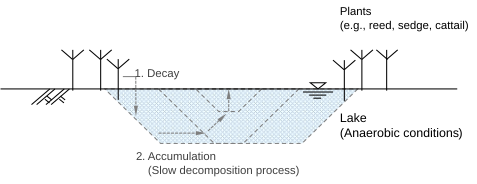
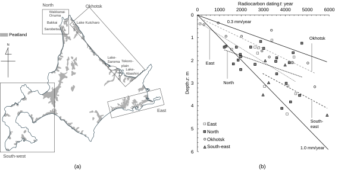
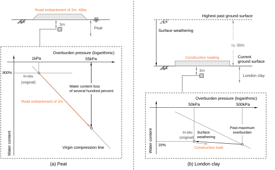

Ch1.2
Formation history and informative indices of organic soil
Peat, the material of interest in the present study, is the organic soil formed in wetland. It is notorious for its extreme softness; virgin peatlands are often too weak to support construction activities. This is primarily attributed to its very high natural water content $w_n$ (typically 80–1200%; Abe et al., 2022), which originates from its formation history. The water content of soil $w$ is defined as:
The process of peatland (i.e., moor) formulation is schematised in Fig. 1.2.1. The plants flourishing around the lakeshore, which have grown during summer, die in autumn and sink into the water, where they mix with inorganic sediments at the bottom. Under the anaerobic conditions of the water, the dead plants undergo limited decomposition, thereby forming organic matter. As this cycle repeats, the land gradually develops from the periphery, and eventually the lake (or marsh) becomes filled with the dead plants. Accordingly, peat remains at the surface, forming a thin layer, typically 3–5 m thick (CERI 2020).

Ohira (1995) summarises the radiocarbon age of peat samples collected from multiple sites throughout Hokkaido shown in Fig. 1.2.2 (a). The report indicates that peatlands in Hokkaido accumulate at a rate of 0.3–1.0 mm/year, as represented by Fig. 1.2.2 (b). In other words, a peat layer 3 m thick would represent roughly 3,000 years of accumulation. This is a relatively short timescale for soil formation; London clay has a formation history of more than 50 million years.

Depending on the formation history, peat is not purely organic in composition. A typical measure for the organic content is the ignition loss $L_{ig}$, defined as:
Here, $m_{ash}$ is the mass of ash remaining after ignition, $m_s$ is the mass of the solid part (practically, the mass of oven-dried soil), and $C_{ash}$ is ash content. Since ash remains at 5% even for purely organic materials such as reed, $L_{ig}$ typically takes values below 95%. Considering this small correction, the organic content $C_o$ can be estimated from the ignition loss as:

The organic content is well correlated with the natural water content. Yamaguchi et al. (1986) shows the following relationship:
Given its good correlation with the organic content, which reflects the depositional history of peat, the natural water content can serve as the most practical and informative index, being much easier to measure. In fact, the natural water content of peat exhibits clear correlations with various mechanical indices.
For peat, the specific gravity of the solid part $G_s$ is also a function of the organic content. Assuming that the solids are classified into organic and inorganic components, its expression is given as:
Here, $G_{io}$ is the specific gravity of inorganic matter and $G_o$ is the specific gravity of organic matter. According to Kogure (), the values $G_{io}=2.7$ and $G_o=1.5$ provide the best fit to the experimental data. Also, for saturated soils, the following relationship holds:
Here, $e$ is void ratio. To further understand the formation process of peat ground, let us consider its natural deposition (and the associated consolidation) that has taken place over the past several thousand years. Assuming a typical case where $L_{ig}=90\%$ (i.e., $w_n\simeq800\%$), the specific gravity of solids is estimated to be 1.5 from Eq. (1.2.5). Then, the effective overburden stress $\sigma'_z$ (i.e., total overburden stress minus pore-water pressure) is calculated as:
Here, $\rho_w$ is the density of pore water, $g$ is gravitational acceleration, and $z$ is the depth of interest. Considering a soil element at a depth of 3 m, for instance, it undergoes an effective overburden of only about 1 kPa during natural sedimentation. This very low overburden, in addition to its origin as accumulated plant matter that originally contained a large amount of moisture, accounts for the exceptionally high water content retained in-situ.
In contrast, soils such as the London clay have undergone a completely different formation process; their ground surface has retreated significantly due to prolonged weathering and erosion during the past 50 million years. Assuming a surface retreat of 30 m, the corresponding removal of overburden is estimated to be about 500 kPa from Eq. (1.2.6) ($G_s=2.7$). This essentially explains why the natural water content of the London clay is near to the plastic limit ($w_n\simeq30\%$ after Skempton and Henckel, 1957).
Such differences in their formation processes result in different responses to construction loads. Under construction loading, peat is subjected to a “virgin” compression process, whereas the London clay experiences a reloading process, which is far less compressible than the virgin one. Also, the volumetric behaviour of both clay and peat generally follows an exponential relationship with changes in overburden pressure. Consequently, a stress change of several ten kPa in peat causes a far more significant compression than in the London clay.